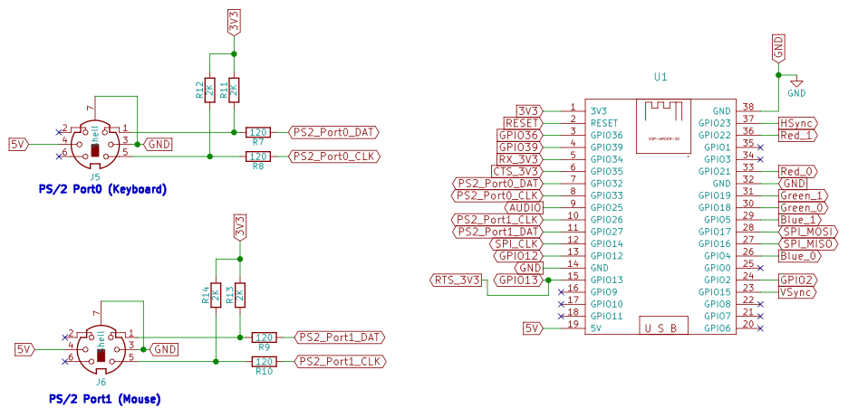

- Generated on for FabGL2 by
 1.18.0
1.18.0
|
FabGL2 2.0.0
ESP32 Display Controller and Graphics Library for ESP-IDF
|
Each PS/2 keyboard or mouse uses two GPIOs (clock and data). Each signal requires a 120 Ohm series resistor and a 2K Ohm pull-up resistor:

Using the GPIOs above, a PS/2 mouse can be initialized as follows:
Mouse.begin(GPIO_NUM_26, GPIO_NUM_27); // CLK, DAT
When both a mouse and a keyboard are connected, initialization must be performed through the PS2Controller:
fabgl::PS2Controller PS2Controller; fabgl::Keyboard Keyboard; fabgl::Mouse Mouse; // port 0 (keyboard) CLK and DAT, port 1 (mouse) CLK and DAT PS2Controller.begin(GPIO_NUM_33, GPIO_NUM_32, GPIO_NUM_26, GPIO_NUM_27); // initialize the keyboard on port 0 (GPIO33=CLK, GPIO32=DAT) Keyboard.begin(true, true, 0); // initialize the mouse on port 1 (GPIO26=CLK, GPIO27=DAT) Mouse.begin(1);
When using the GPIOs above, mouse and keyboard can be configured more simply with a preset:
fabgl::PS2Controller PS2Controller; PS2Controller.begin(PS2Preset::KeyboardPort0_MousePort1);